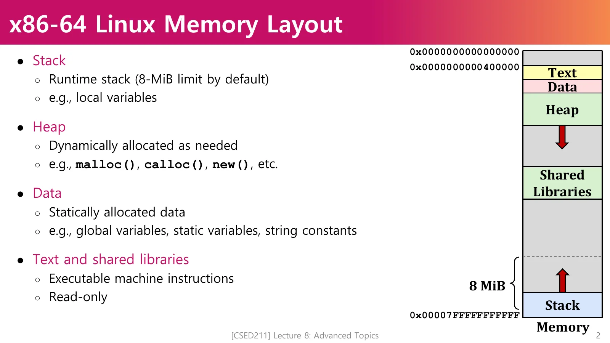
Text : 0x400000 근처, machine code, read-only
Stack은 아래로, heap은 위로 자람
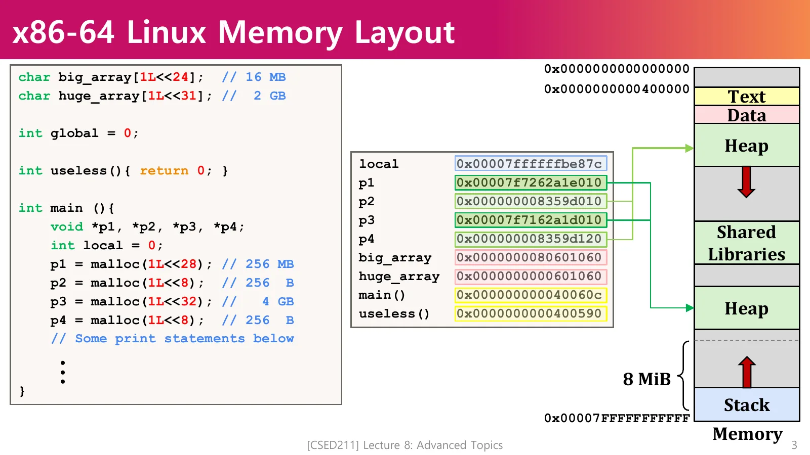
char big_array[1L<<24] : 16 MB global array
char huge_array[1L<<31] : 2 GB global array
p1 = malloc(1L<<28) : 256 MB
p2 = malloc(1L<<8) : 256 B
p3 = malloc(1L<<32) : 4 GB
p4 = malloc(1L<<8) : 256 B
실행 예 : local 0x7ffffffbe87c, p1 0x7f7262a1e010, p2 0x8359d010
주소가 흩어지는 이유 : heap·stack·shared library가 각각 다른 방향으로 자람
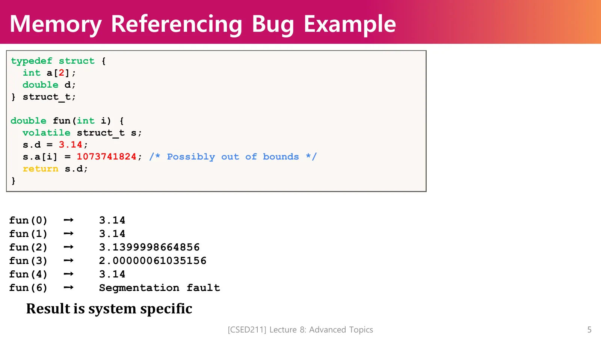
struct_t { int a[2]; double d; }
fun(i) : s.d = 3.14, s.a[i] = 1073741824, return s.d
결과 : fun(0)=3.14, fun(1)=3.14
결과가 시스템마다 다른 이유 : struct padding과 stack 배치가 compiler·OS마다 다름
메모리 배치 : a[0] offset 0, a[1] offset 4, d offset 8
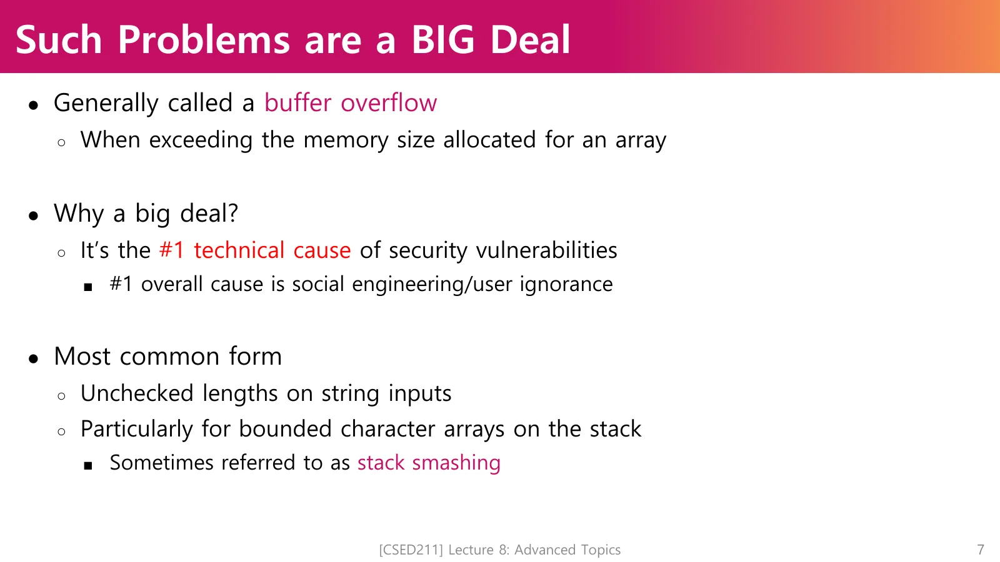
buffer overflow : array에 할당된 크기를 넘겨 쓰는 것
기술적 원인 기준 보안 취약점 1위
가장 흔한 형태 : unchecked string length
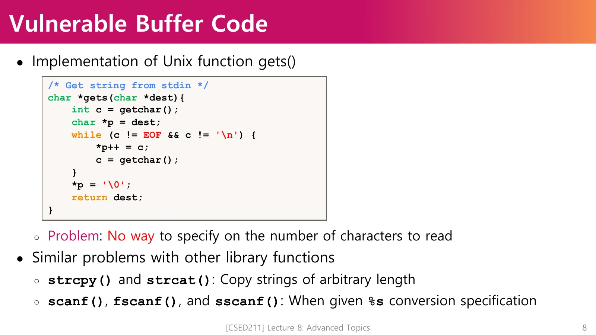
gets(char *dest) : EOF나 개행까지 읽고 *p++ = c, 마지막에 *p = '\0', return dest
비슷한 함수 : strcpy, strcat (임의 길이 복사)
scanf·fscanf·sscanf의 %s (길이 제한 없음)echo() : char buf[4]; gets(buf); puts(buf);
01234567890123456789012 : 그대로 출력되지만 stack 일부를 이미 덮음012345678901234567890123 : 출력이 01234568901234567890123처럼 깨짐0123456789012345678901234 : Segmentation fault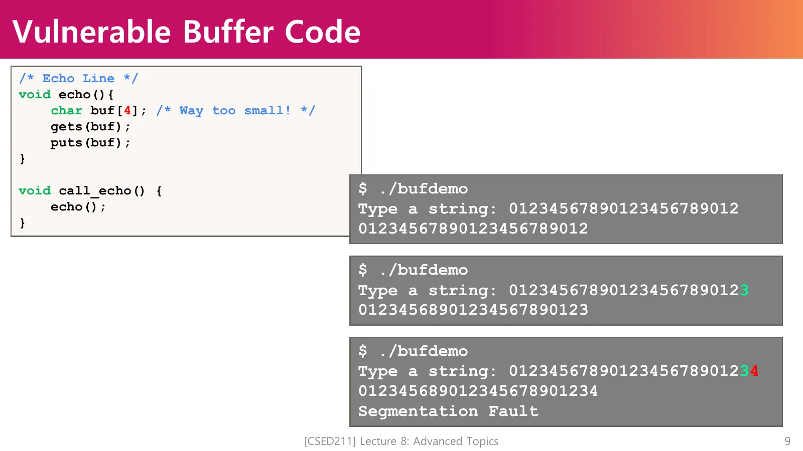
echo disassembly : sub $24,%rsp, %rsp를 gets 인자로 전달
%rsp = buf 시작%rsp+2423바이트 + null = 24바이트 : buf와 padding을 꽉 채움
24바이트 + null = 25바이트 : return address 첫 byte를 0x00으로 덮음
25바이트 이상 : return address 여러 byte가 바뀌어 retq가 엉뚱한 주소로 점프
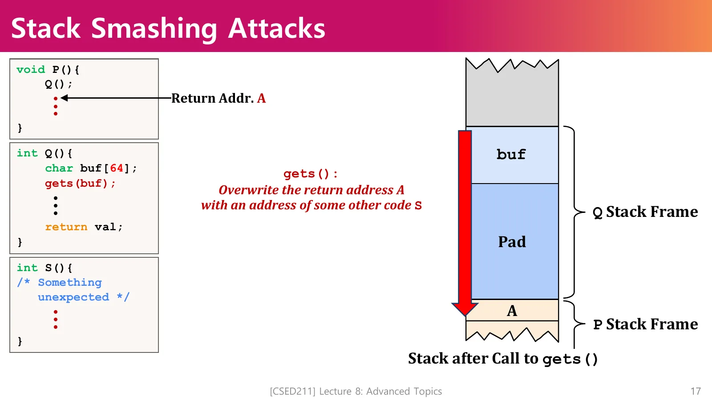
Q() : char buf[64]; gets(buf);
Q가 ret : A 대신 S로 점프
attack string : 24바이트 filler + 8바이트 주소 0x4006fb(smash)
smash() : printf("I've been smashed!\n"), exit(0)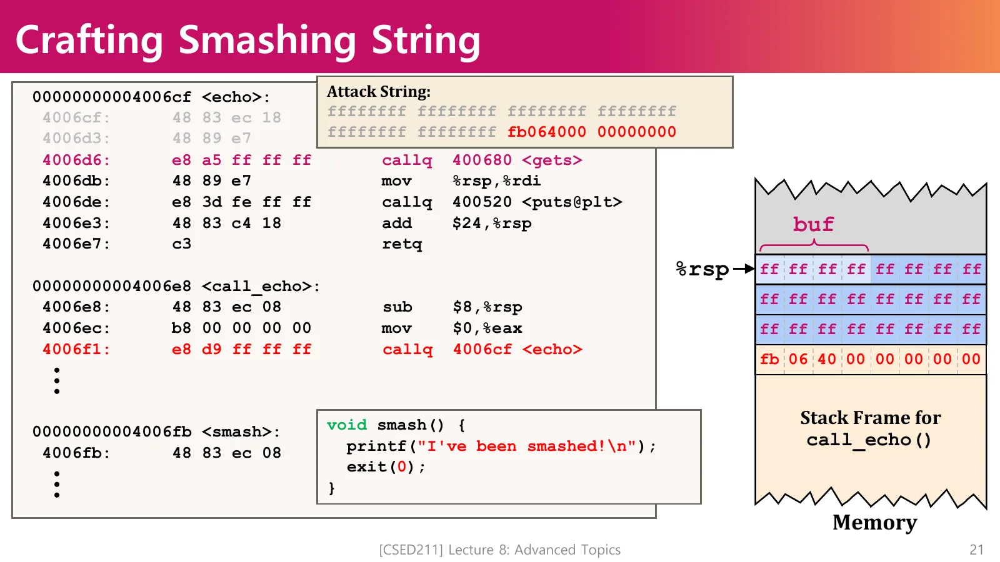
filler : ff ff ff ff × 6 = 24바이트
fb 06 40 00 00 00 00 00 = 0x4006fb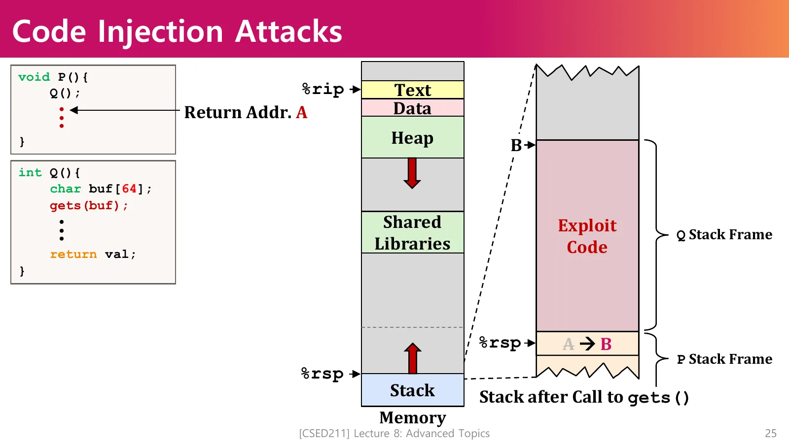
return address A를 buf의 주소 B로 덮음
Q가 ret : %rip가 B로 이동해 stack 위 exploit code를 실행
성립 조건 : stack이 executable, B 주소를 예측 가능
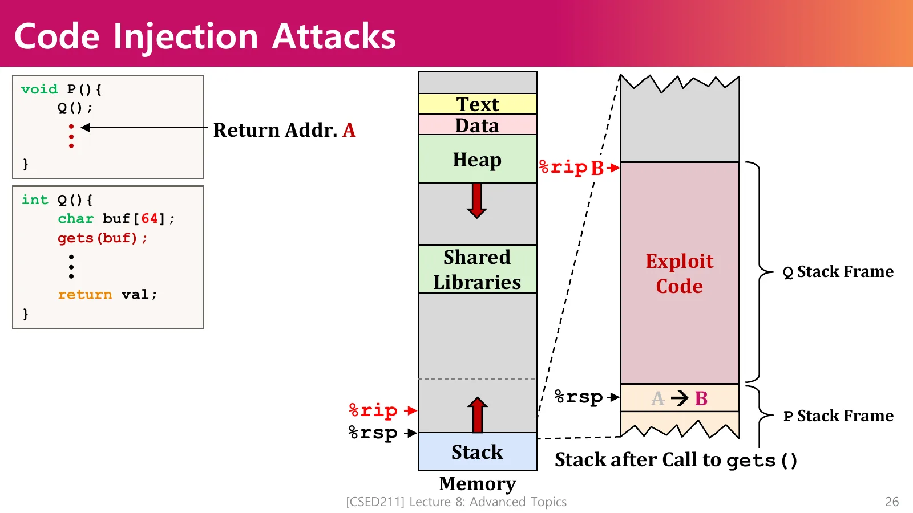
원격 machine에서 arbitrary code 실행 가능
Lab 4 Attack Lab에서 직접 실습
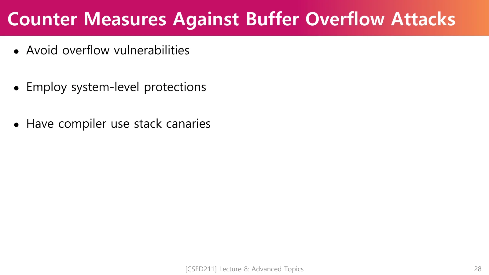
gets(buf) → fgets(buf, 4, stdin) : 최대 3문자 + null
strcpy → strncpy
scanf %s → fgets 또는 %ns (n은 buffer 크기)
code 수준 수정은 기본이지만 legacy code를 모두 고칠 수 없음
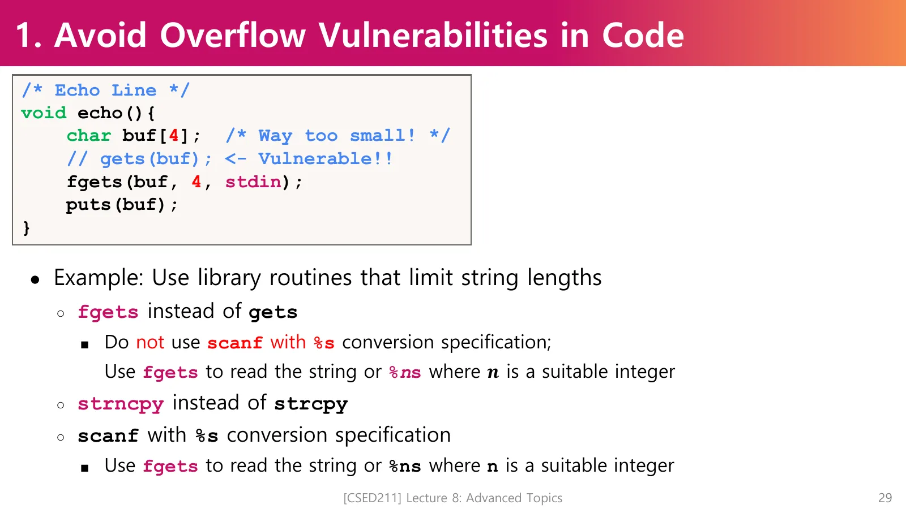
ASLR : 프로그램 시작 시 stack에 임의 크기의 공간을 할당
실행 예 : local 주소가 0x7ffe4d3be87c, 0x7fff75a4f9fc
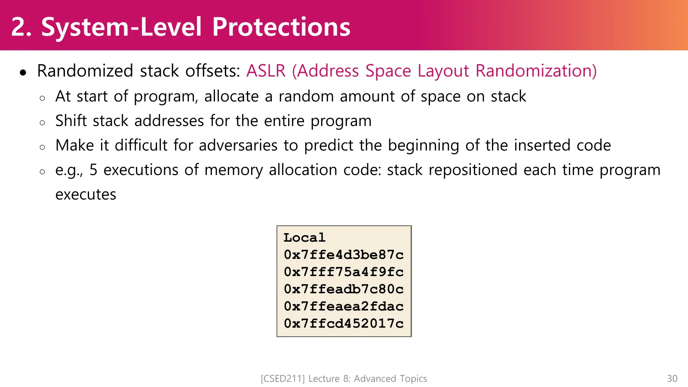
전통 x86 : read-only 또는 writable만 표시, 읽을 수 있으면 실행 가능
x86-64 : executable permission을 명시적으로 추가
고전 code injection은 막지만 ROP는 막지 못함
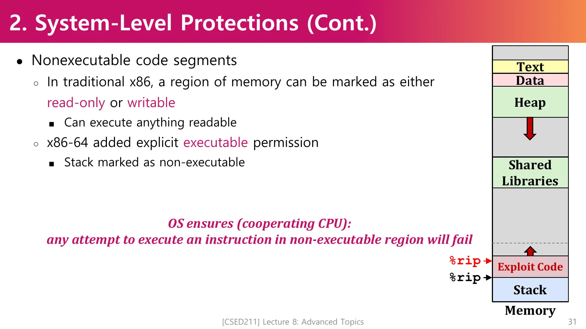
buffer 바로 뒤에 special value(canary)를 놓음
__stack_chk_failGCC -fstack-protector : 현재 기본값
보호된 프로그램에 9바이트 입력 → *** stack smashing detected ***
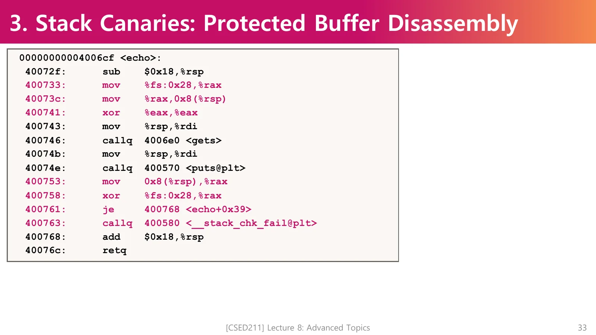
mov %fs:0x28,%rax : canary 읽기
mov %rax,0x8(%rsp) : stack에 저장
xor %eax,%eax : register의 canary 복사본 지우기
gets 후 : mov 0x8(%rsp),%rax, xor %fs:0x28,%rax
je로 정상 returncall __stack_chk_failframe : buf %rsp, canary %rsp+8, return address %rsp+24
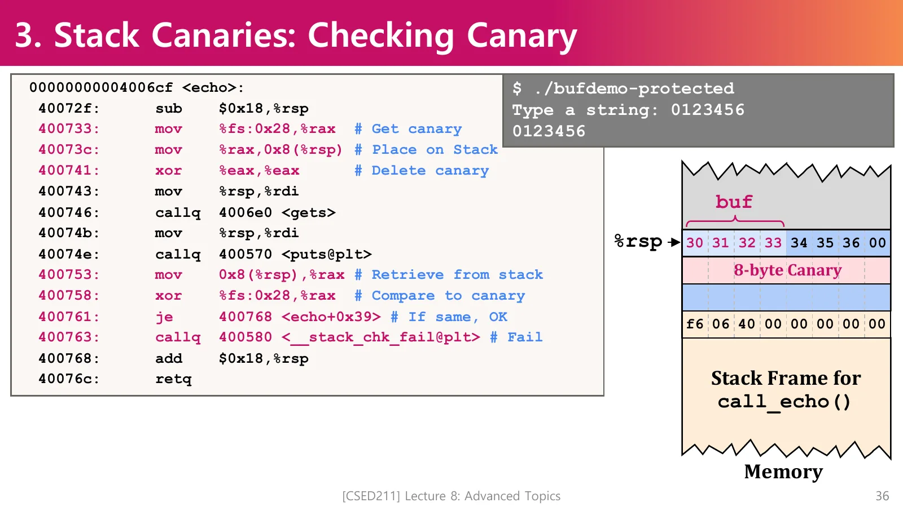
canary 최하위 byte는 0x00인 경우가 많음
슬라이드 표현 : benign corruption (무해한 손상)
canary는 return address를 덮는 공격을 막는 데 초점
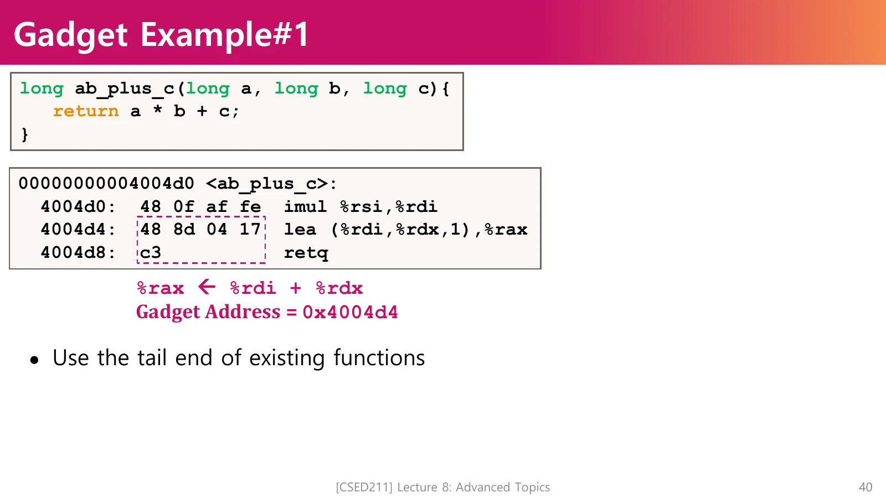
배경 : stack randomization + non-executable stack → code injection 어려움
대안 : 이미 존재하는 code/library code를 재사용, fragment(gadget)를 이어 붙임
ret(0xc3)로 끝나는 instruction sequenceab_plus_c gadget : 0x4004d4
imul %rsi,%rdi, lea (%rdi,%rdx,1),%rax, ret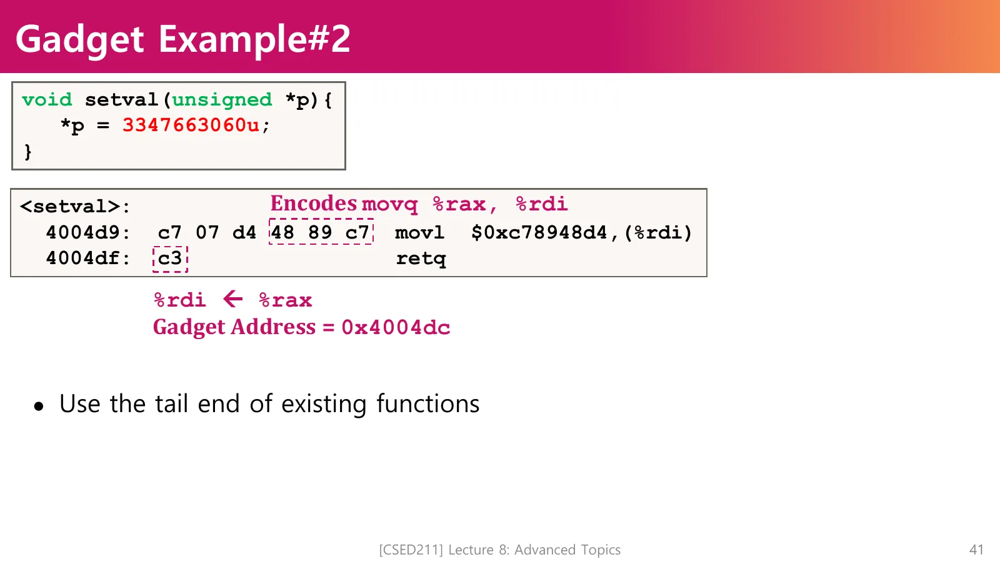
setval gadget : 0x4004dc
c7 07 d4 48 89 c7가 movq %rax,%rdi를 encode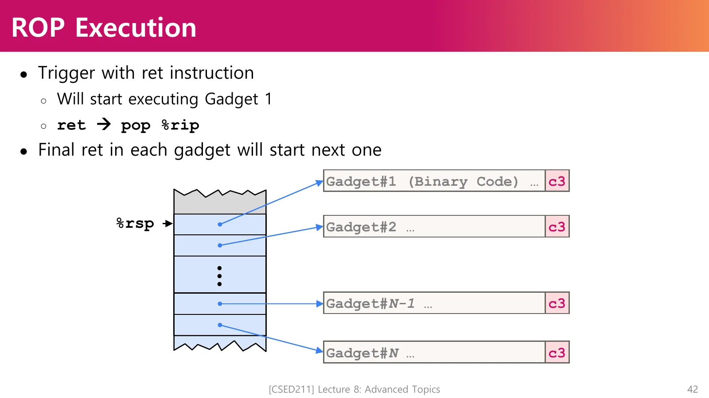
ret : stack에서 다음 gadget 주소를 pop
ret이 다음 gadget을 시작attack string : filler + gadget 주소 연속
예제 : echo가 %rdi+%rdx를 계산하는 gadget으로 return
ROP는 non-executable stack과 ASLR을 우회
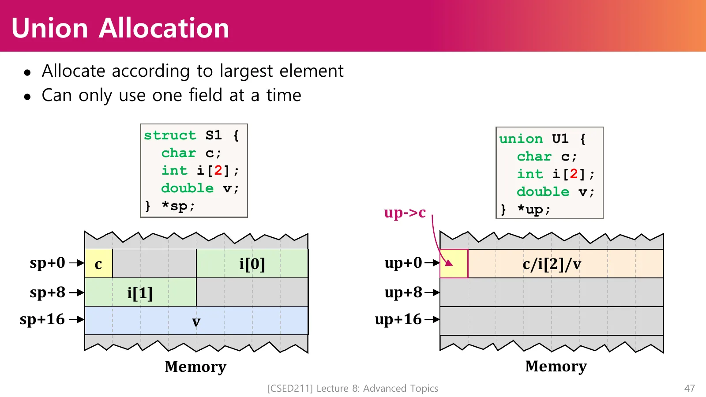
struct S1 { char c; int i[2]; double v; }
union U1 { char c; int i[2]; double v; }
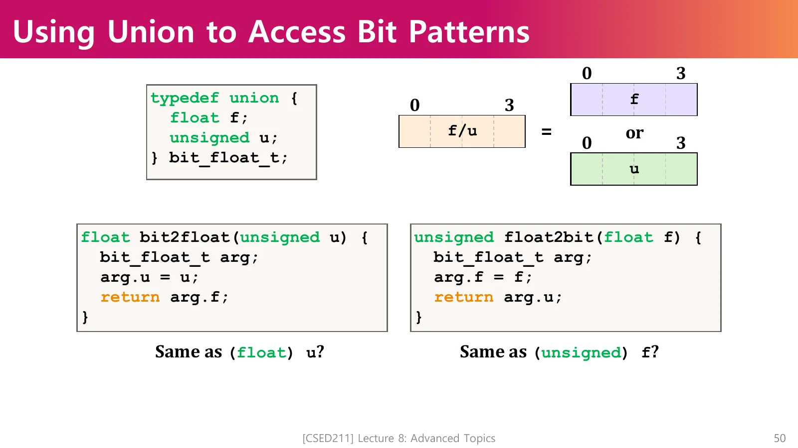
union { float f; unsigned u; }
bit2float(u) : u에 bit pattern을 쓰고 f로 읽음float2bit(f) : f에 값을 쓰고 u로 읽음(float) u / (unsigned) f : 값 변환
IEEE 754 float의 sign·exponent·fraction 확인에 사용
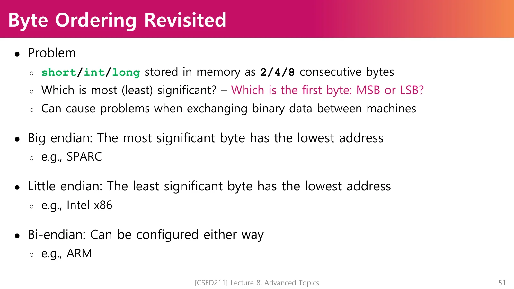
short/int/long : memory에 2/4/8개의 연속 byte
Big endian : most significant byte가 가장 낮은 주소 (SPARC)
Little endian : least significant byte가 가장 낮은 주소 (Intel x86)
Bi-endian : 설정에 따라 둘 다 (ARM)
machine 사이 binary data 교환 시 문제
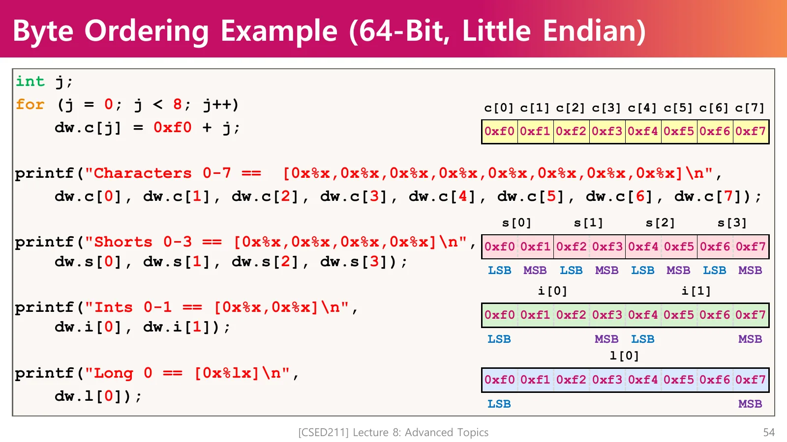
union { unsigned char c[8]; unsigned short s[4]; unsigned int i[2]; unsigned long l[1]; } dw;
dw.c[0..7] = 0xf0..0xf7
Little endian : s[0..3] = 0xf1f0, 0xf3f2, 0xf5f4, 0xf7f6
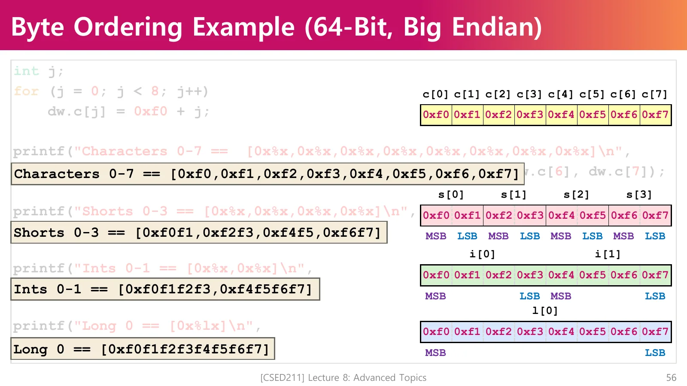
Big endian : s[0..3] = 0xf0f1, 0xf2f3, 0xf4f5, 0xf6f7
struct_t : a[0] 0, a[1] 4, d 8 → a[2]부터 d를 덮음
echo frame : buf %rsp, return address %rsp+24
struct S1 : offset 0/8/16, size 24
union U1 : 모두 offset 0, size 8
보안 : fgets·strncpy·%ns / ASLR / non-executable stack
%fs:0x28, __stack_chk_failret으로 끝나는 gadget, canary는 우회 못 함endian : little/big endian의 s/i/l 값 구분
struct_t에서 fun(2)와 fun(3)이 3.14가 아닌 값이 나오는 이유를 offset으로 설명하라.
a[2]는 d의 offset 8에 놓이는 첫 4byte를 덮음
d의 낮은 byte가 바뀌어 3.14가 3.1399998664856이 됨
a[3]은 d의 나머지 4byte까지 덮음
d 전체가 2.00000061035156으로 바뀜
echo()의 buf[4]에 24바이트를 넣으면 return address가 어떻게 바뀌는가?
buf 4byte + padding 20byte = 24byte
24번째 byte까지 채우고 gets가 붙이는 null이 return address의 첫 byte를 0x00으로 덮음
원래 return address 0x4006f6 → 0x400600
retq가 0x400600으로 점프해 출력이 깨지거나 비정상 동작
dw.c[0..7] = 0xf0..0xf7일 때 little endian과 big endian의 s[0], i[0], l[0]을 구하라.
Little endian : s[0] = 0xf1f0, i[0] = 0xf3f2f1f0
l[0] = 0xf7f6f5f4f3f2f1f0
Big endian : s[0] = 0xf0f1, i[0] = 0xf0f1f2f3
l[0] = 0xf0f1f2f3f4f5f6f7
슬라이드 11–16의 disassembly walkthrough는 녹취가 거의 없어 슬라이드만으로 정리